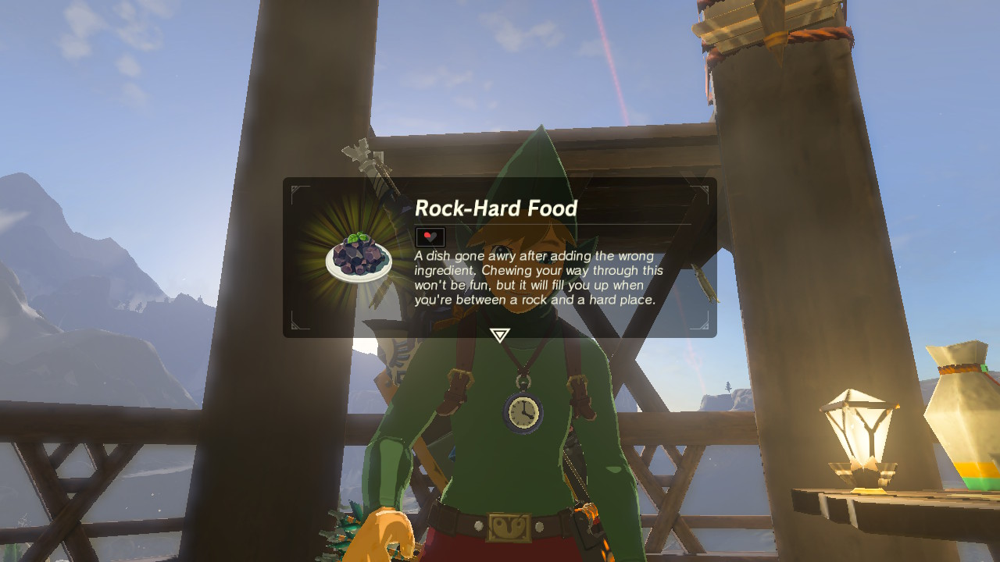

In my opinion this is indubitably one of the most underrated dishes in Breath of the Wild.
The roch-hard food dish. A simple, but also very filling and reliable dish for when you are between a rock and a hard place.
While eating rocks might not be a good idea for regular people, for Link is no trouble at all, and according to him, is very nutritious.

Ingredients
- A cruelty free harvested Bokoblin Horn.
- Two warm Red Chuchu Jelly.

- A freshly harvested Ruby.

After gathering all these items, all we have to do is find a hot pot so we can make this bad boy.
Instructions
- Take your Halal bokoblin horn and throw it into your cooking pot.
- Carefully add the two previosly warmed chuchu jellies, and add them to the pot. Careful while handling chuchu jelly since they are knonw to be extremely volatile.
- Grab your freshly harvested ruby, give it a nice polish and throw that bad boy into that pot.
- Wait until you can smell the volcanic fumes and remove from the heat inmediately. We don't want to overcook it, but we also want it to have a nice crispiness for our dish.
- Serve and enjoy your perfectly cooked roock-hard dish. Though be prepared. It's not easy to chew, or digest...
Back to the top
Return to main page